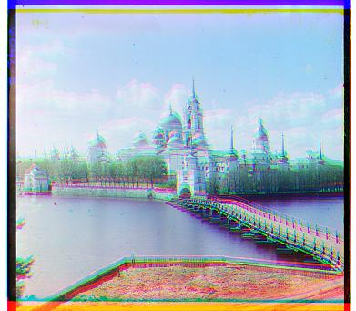

R[107, 40] G[49, 24]
R[107, 40] G[49, 24]| Edge Detection | Basic NCC |
|---|---|
| emir.jpg | |
| R[107, 40] G[49, 24] | R[0, 0] G[0, 0] |
Here are the results of the algorithm, with the offset shown below each image.
| Aligned + Cropped | Naive Stacking |
|---|---|
| church.jpg | |
| R[58, -4] G[25, 4] | R[0, 0] G[0, 0] |
| emir.jpg (edge detection) | |
| R[107, 40] G[49, 24] |  R[0, 0] G[0, 0] R[0, 0] G[0, 0] |
| harvesters.jpg | |
| R[124, 13] G[60, 17] |  R[0, 0] G[0, 0] R[0, 0] G[0, 0] |
| icon.jpg | |
| R[89, 23] G[41, 17] | R[0, 0] G[0, 0] |
| lady.jpg | |
| R[117, 12] G[55, 8] |  R[0, 0] G[0, 0] R[0, 0] G[0, 0] |
| melons.jpg | |
| R[176, 13] G[81, 10] |  R[0, 0] G[0, 0] R[0, 0] G[0, 0] |
| onion_church.jpg | |
| R[108, 36] G[51, 27] | R[0, 0] G[0, 0] |
| sculpture.jpg | |
| R[140, -27] G[33, -11] | R[0, 0] G[0, 0] |
| self_portrait.jpg (edge detection) | |
| R[176, 37] G[79, 29] |  R[0, 0] G[0, 0] R[0, 0] G[0, 0] |
| three_generations.jpg | |
| R[111, 11] G[53, 14] | R[0, 0] G[0, 0] |
| train.jpg | |
| R[87, 32] G[43, 6] | R[0, 0] G[0, 0] |
| cathedral.jpg | |
 R[12, 3] G[5, 2] R[12, 3] G[5, 2] |  R[0, 0] G[0, 0] R[0, 0] G[0, 0] |
| monastery.jpg | |
| R[3, 2] G[-3, 2] | R[0, 0] G[0, 0] |
| tobolsk.jpg | |
| R[6, 3] G[3, 3] |  R[0, 0] G[0, 0] R[0, 0] G[0, 0] |
Acknowledgements |